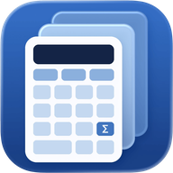

Quick Sigma
Easy to enter. Totals in one tap.
Quick Sigma is an iPhone app that makes it easy to enter numbers and get a total for each category right away. Key in figures from receipts, sales slips, and other paperwork the way you would on a calculator. It was built so you never have to go through the same stack of paper twice.
Three steps
- Set up your categories (once, up front)
Decide what you're adding up, then set up these three levels.What you're totaling (Tab) → Category (Group) → Breakdown (Item)
Example: Household → Food → Vegetables - Tap keys to enter your numbers
The groups and items you set up become keys on your calculator. Just tap Group → Item → number. - Tap the ∑ (Totals) key
You get subtotals and the grand total. Switch between views (by group, by item, or by date), or total a period such as this week, this month, or last month. Each total also shows how many entries went into it.
Why entering numbers is easy
Easy to set up
- Start right away. There's no account to create.
- Only a few decisions up front. How numbers are handled, such as the unit label and the number of digits, is set per tab. A new tab starts with no unit label, the standard digit setting (up to 8 digits and 2 decimal places), and today's date for new entries, so you can use it as is and change only what you need.
- Adding names is type-and-Return. For groups and items alike, type a name, tap Return, and the field is ready for the next one.
Easy to enter
- Pick a category by tapping a key. You never retype a name, so the same category can't end up under two different names, like "Food" in one place and "Groceries" in another.
- Numbers go in the way they do on a calculator. The keys are laid out the way you already know.
- The date fills itself in. When you choose a tab, today's date is filled in. It can also fit other routines, such as entering yesterday's numbers the next morning or not tallying on certain days of the week (see "Date rules" below).
- Carry over what you just entered. The New Entry keys let you pick where the next entry starts: at the group, at the item, or straight at the number. If the category hasn't changed, you just type the next number.
- Nothing on the entry screen but what you need. There's no running total changing with every keystroke. You can keep your mind on the number in front of you.
- Keys are always in the same place. Group and item keys appear right where the number keys are, in the same order every time. Your fingers and eyes barely have to move, and you learn each key by its position.
Easy to total
- Just tap the ∑ (Totals) key. There are no formulas to build and no ranges to select. Everything you entered comes up totaled by category.
Easy, so it's quick
All you tap is Group → Item → number. There are no names to type, the keys don't move, and the date fills itself in. With each small step trimmed away, you can keep a steady pace even through a thick stack of slips.
Make it fit the way you work
- Unit label and digits: Each tab can have its own unit label ($, kg, boxes, and so on), placed before or after the number. The label is for display only and doesn't affect any calculation. For digits, choose between the standard setting (up to 8 digits and 2 decimal places) and one for fine values (up to 4 digits and 6 decimal places).
- Key colors: Choose from five color themes for the number keys, and from five colors each for the group keys and the item keys. All of them are free. Group keys and item keys can't share a color, so the color also tells you which one you're choosing.
- Key layout: Besides the standard 3×4 layout, there are 3×3 (wide) and 4×4 (extended) layouts. (3×3 and 4×4 are part of the Full Plan.)
Date rules (how the date fills itself in)
When you start entering numbers, Quick Sigma fills in the date. If you don't set anything, it's today's date. If you do your tallying on a regular schedule, you can set a rule for each tab so that the date fits your routine.
Just two settings
- Days you tally: The days of the week when you do your tallying (entering numbers). All seven are on to begin with. Turn off the days when you don't tally. Then, on the next day you do, you can also pick the dates for the days you skipped.
- Use the previous day's date: When this is on, the date is set one day earlier. It's for routines like "enter yesterday's numbers this morning." It's off to begin with.
How the date is chosen
- The candidate dates run from the day after your last tally day through today. The idea is that these are the days you haven't entered yet since you last tallied.
- If the previous-day setting is on, every candidate moves back one day.
- If there is only one candidate, it's filled in automatically. If there are two or more, you get a screen to choose the date.
Examples
You enter each day's numbers that same day
Settings: all days on, previous-day off (the defaults)
→ Whenever you open it, today's date is filled in automatically.
Every morning, you enter the previous day's numbers (you tally every day)
Settings: all days on, previous-day on
→ Whenever you open it, yesterday's date is filled in automatically.
Every morning, you enter the previous day's numbers, but you don't tally on Mondays
Settings: Monday off, previous-day on
→ Wednesday through Sunday mornings, the previous day's date is filled in automatically.
→ On Tuesday morning, you choose between Sunday and Monday. You can enter Sunday's numbers, which you didn't get to on Monday, and Monday's numbers as usual, each under its own date.
You tally once a week, on Saturdays only
Settings: only Saturday on, previous-day off
→ When you open it on Saturday, you choose from the seven days from Sunday through Saturday.
Entries are kept by tab and by date
In Quick Sigma, you enter numbers one date at a time within each tab. Think of a notebook: a tab is one notebook, each date gets a page, and each number you enter is a line on that page. The app calls that page a "record."
- The date belongs to the page (the record), not to each individual number.
- Tap the date at the top of the entry screen to change it. This changes the date for every number in that record. It's like rewriting the date at the top of a page.
- You can't move a single number to a different date. To enter a number under another date, choose that date's record from the history on the Home screen, go from the list to the entry screen, and add it with a New Entry key.
- If a record for the same date already exists when you start: When the date that's filled in already has a record in that tab, you're asked whether to add to that record or create a new one.
- If you change the date partway through: Even if the tab already has a record for the new date, the two aren't merged. Yours stays a separate record. To total them together, choose the tab in Totals settings and select both records for that date.
- The candidate dates you see when you start come from your day-of-week settings. They don't depend on what you've actually entered.
How it compares with a calculator or a spreadsheet
Quick Sigma is built for one job: taking numbers off paper, like a pile of receipts or sales slips, and totaling them by category. Here's how that job goes with a calculator, with a spreadsheet, and with Quick Sigma. If your numbers already exist as digital data, you're better off pasting them straight into a spreadsheet.
Getting totals by category
- Calculator: You go back through the same paperwork once for every category.
- Spreadsheet: You have to build the formulas or a summary table yourself.
- Quick Sigma:Best fit You set up your categories and items once, up front. After that, you go through the paperwork a single time, top to bottom, and tap the ∑ (Totals) key to see a subtotal for each category and the grand total.
Labeling each number
- Calculator: There's nowhere to put a label. You keep track of which number belongs to which category in your head or on paper.
- Spreadsheet: You type the category and item next to every number. Typing them over and over, it's easy to end up with the same item spelled several different ways. A drop-down list fixes that, but setting one up takes some know-how and prep work.
- Quick Sigma:Best fit The categories and items you set up become keys on the calculator. You just tap them, so there's nothing to retype and the names always match.
Working from paper
- Calculator:Best fit It sits right beside your paperwork.
- Spreadsheet: On a phone, the cells are small and fiddly. On a computer, your eyes keep jumping between the paper and the screen.
- Quick Sigma:Best fit Your iPhone sits right beside your paperwork, and you tap keys just as you would on a calculator. Category and item keys show up in the same spot as the number keys, so your fingers and your eyes stay put.
Fixing a mistake
- Calculator: Unless your calculator keeps a record of what you entered, you start over.
- Spreadsheet:Best fit You find the row and fix it.
- Quick Sigma:Best fit Every entry is saved individually. Just like in a spreadsheet, you find the one that's wrong and fix it.
Going further: formulas, charts, and analysis
- Calculator: You retype your results into a spreadsheet or some other tool.
- Spreadsheet:Best fit This is what spreadsheets do best.
- Quick Sigma: It gives you totals and entry counts. For anything beyond that, export a CSV file and take it into a spreadsheet or another tool. (CSV export is part of the Full Plan.)
In the exported CSV, each entry is one row. The file looks like this:
Tab name,Date,Note,Group name,Item name,Value Household,2026-11-14,Saturday errands,Food,Vegetables,4.85 Household,2026-11-14,Saturday errands,Food,Meat,12.49 Household,2026-11-14,Saturday errands,Transit,Train,3.25 Household,2026-11-15,,Food,Vegetables,2.98
Open it in a spreadsheet app and it comes up as this table:
| Tab name | Date | Note | Group name | Item name | Value |
|---|---|---|---|---|---|
| Household | 2026-11-14 | Saturday errands | Food | Vegetables | 4.85 |
| Household | 2026-11-14 | Saturday errands | Food | Meat | 12.49 |
| Household | 2026-11-14 | Saturday errands | Transit | Train | 3.25 |
| Household | 2026-11-15 | Food | Vegetables | 2.98 |
Categories (the Group name column) and items (the Item name column) appear exactly as you named them, and values are plain numbers with no unit labels or thousands separators, so the table is ready for formulas and charts.
How it compares with other kinds of apps
Quick Sigma doesn't assume what you're adding up. You pick the categories and the unit label. If you have one specific purpose in mind, an app built for that purpose may serve you better.
- Tally counter apps: These are mostly for counting things one tap at a time. Quick Sigma is for keying in amounts, weights, and other values, and totaling them three ways: by category, by item, and by date.
- Budgeting apps: These come with categories and features designed for personal finances. If managing a household budget is your goal, a budgeting app is the better choice. In Quick Sigma you define the categories yourself, so it works just as well for sales, inventory, mileage, or anything else you add up.
- Bill-splitting apps: Many of these divide the total evenly among everyone. With Quick Sigma, you assign each line on the receipt to a person as you enter it, so each person gets a total for what they actually had.
Ways to use it
- Sales by department: For shops that add up each day's sales by department on a calculator. You can also regroup the same sales by product.
- Household spending: Record what you spend by category and see each month's totals.
- Splitting the bill: You paid for dinner with friends. Enter the receipt just once, top to bottom, then tap ∑. Each person's total is ready, with no going back down the receipt for each person.
- More than money: Inventory counts, mileage, and so on. Each tab can have its own unit label.
Free
- 1 tab with up to 5 groups, and up to 5 items in each group. This free allowance is called "Main."
- No limit on how many entries or days you record.
- You can reorder groups and items within Main.
- Viewing past data, totals, and backup are always free and unlimited.
Full Plan (subscription)
- Unlimited tabs, groups, and items
- Changing what's in Main (swapping which tab, groups, and items count as Main)
- Custom digit limits (how many integer and decimal places an entry can have)
- Saving 0 as an entry
- Key layouts (3×3 and 4×4)
- CSV export (opens in spreadsheet apps)
Monthly and yearly plans are available. Prices are shown on the App Store and on the in-app purchase screen. Canceling never deletes your data. Viewing, totals, and backup remain available, and you can keep adding entries to the tab, groups, and items marked Main.
Your data stays on your device
- Everything you enter is stored only on your iPhone. Nothing is ever sent anywhere.
- No account needed. No ads, no tracking.
- To move your data to another device, create a backup file and restore it there.
See the Privacy Policy for details.
Requirements and availability
- Device: iPhone (see the App Store page for the supported system version)
- Languages: Japanese and English
- Availability: Japan and select English-speaking countries and regions